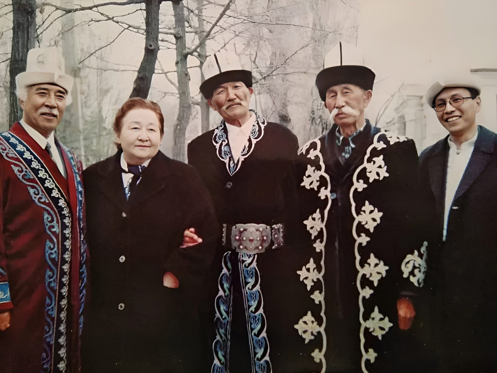
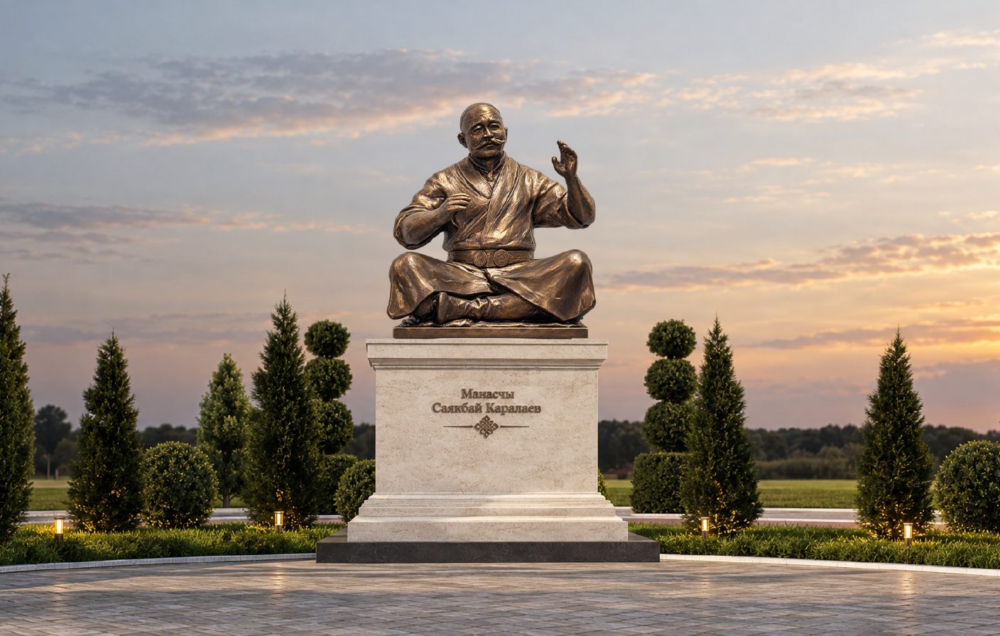
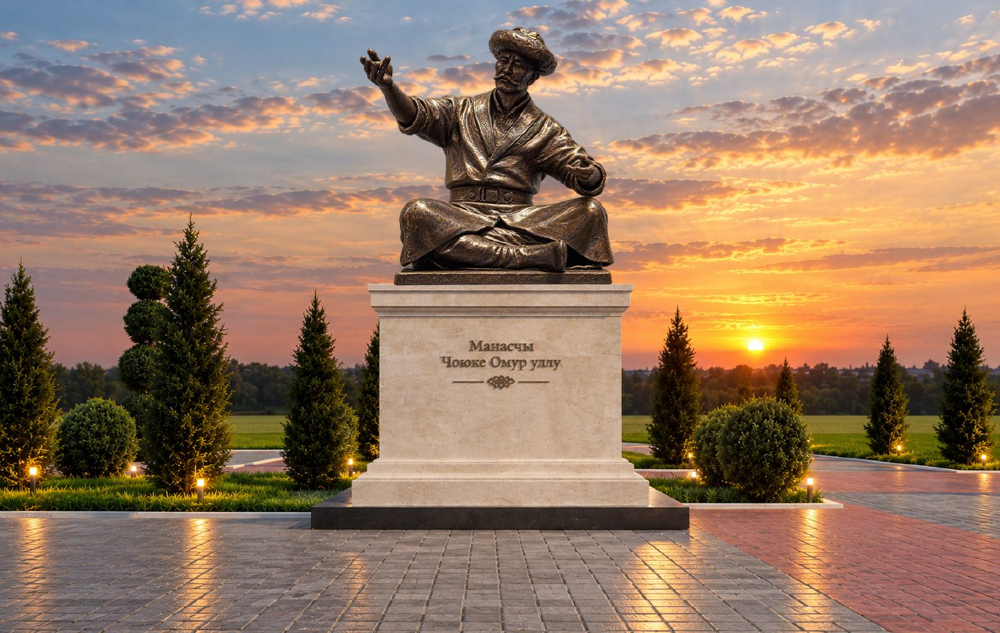

Өмүр жолуЖизненный путь
Шаабай Азизов (Азиз уулу) 1927-жылы Ысык-Көлдүн Ак-Суу районундагы Кара-Бөлтөк айылында манасчынын үй-бүлөсүндө туулган. Атасы Азиз — улуу манасчы Чоюке Өмүр уулунун бир тууганы, ал да «Манас» айткан. Энеси — Асылкан.
Эл оозундагы кеп боюнча, алты-жети жашында кой кайтарып жүргөндө аян болуп, кийин бир жыйында карыя «Айт!» дегенде «Манасты» айтып баштаган.
Шаабай Азизов (Азиз уулу) родился в 1927 году в селе Кара-Бөлтөк Ак-Суйского района на Иссык-Куле, в семье манасчы. Его отец Азиз — брат великого манасчы Чоюке Омур уулу — тоже сказывал «Манас». Мать — Асылкан.
По преданию, в шесть-семь лет, когда он пас овец, ему было видение, а позже на одном собрании старец велел ему: «Айт!» — «Сказывай!», и он начал сказывать «Манас».
Сахна жана филармонияСцена и филармония
1944–1962-жылдары Ысык-Көл облустук драма театрынын артисти болгон. 1952-жылы Саякбай Каралаев өзү аны Кыргыз мамлекеттик филармониясына манасчы кылып чакырган.
Казакфильмдин «Чокан Валиханов» тасмасында манасчынын ролун ойногон. 1994-жылы режиссёр М. Убукеев ал жөнүндө «Акыркы манасчы» даректүү тасмасын тарткан. 1996-жылы Түркияда гастролдо болгон.
В 1944–1962 годах он был артистом Иссык-Кульского областного драмтеатра. В 1952 году Саякбай Каралаев сам пригласил его манасчы в Кыргызскую государственную филармонию.
Он сыграл манасчы в фильме «Казахфильма» «Чокан Валиханов». В 1994 году режиссёр М. Убукеев снял о нём документальный фильм «Последний манасчы». В 1996 году он гастролировал в Турции.
МурасыНаследие
1959-жылы ал Илимдер академиясына «Манастан» 8 368 сап тапшырган, 1971-жылы «Сейтектен» 3 842 сап жазылып алынган. 1995-жылы «Манас», «Семетей», «Сейтек» үнтасмага жазылып, жалпы көлөмү 100 миң саптан ашкан.
1998-жылы «Устат — шакирт» долбоорунда жаш манасчы Тилек Асановго таалим берген. Шаабай Азизов 2004-жылы 13-декабрда дүйнөдөн кайтып, туулган айылына коюлган.
В 1959 году он передал Академии наук 8 368 строк «Манаса», в 1971 году записано 3 842 строки «Сейтека». В 1995 году на плёнку записаны «Манас», «Семетей» и «Сейтек» — всего более 100 тысяч строк.
В 1998 году по проекту «Устат — шакирт» («Учитель — ученик») он обучал молодого манасчы Тилека Асанова. Шаабай Азизов скончался 13 декабря 2004 года и похоронен в родном селе.
Маанилүү даталарГлавные даты
- 1927 — Кара-Бөлтөк айылында туулганРодился в селе Кара-Бөлтөк
- 1944 — Ысык-Көл драма театрынын артистиАртист Иссык-Кульского драмтеатра
- 1952 — Саякбай аны филармонияга чакырганСаякбай пригласил его в филармонию
- 1959 — «Манастан» 8 368 сап жазылып алынганЗаписаны 8 368 строк «Манаса»
- 1994 — Кыргыз Республикасынын эл артистиНародный артист Кыргызской Республики
- 1995 — Трилогия үнтасмага жазылган, «Манас-1000» медалыТрилогия записана на плёнку, медаль «Манас-1000»
- 2004 — Дүйнөдөн кайтканСкончался
СүрөттөрФотографии

Internet Archive · CC BY-NC-SA 4.0Internet Archive · CC BY-NC-SA 4.0
ВидеоВидео
Сквердеги башка манасчыларДругие манасчы в сквере


Булак:Источник: Википедия